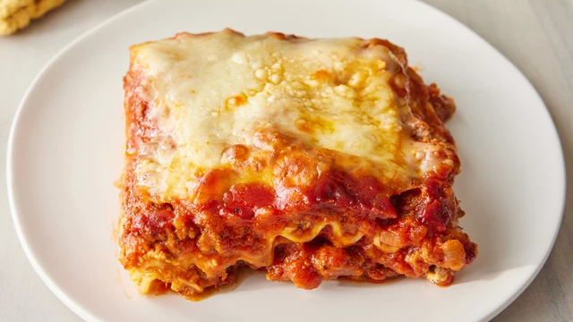

Lasagna

Making lasagna can be time-consuming, but the results
are well worth the wait. You'll find a detailed
ingredient list and step-by-step instructions in the
recipe below, but let's go over the basics:
Ingredients
- Meat
- Onion and garlic
- Tomato products
- Sugar
- Spices and seasonings
- Lasagna noodles
- Cheeses
- Egg
Steps
- Make the meat sauce.
- Cook the noodles.
- Make the ricotta mixture.
- Layer the lasagna according to the recipe instructions.
- Cover with foil and bake.
- Let the lasagna rest before serving.